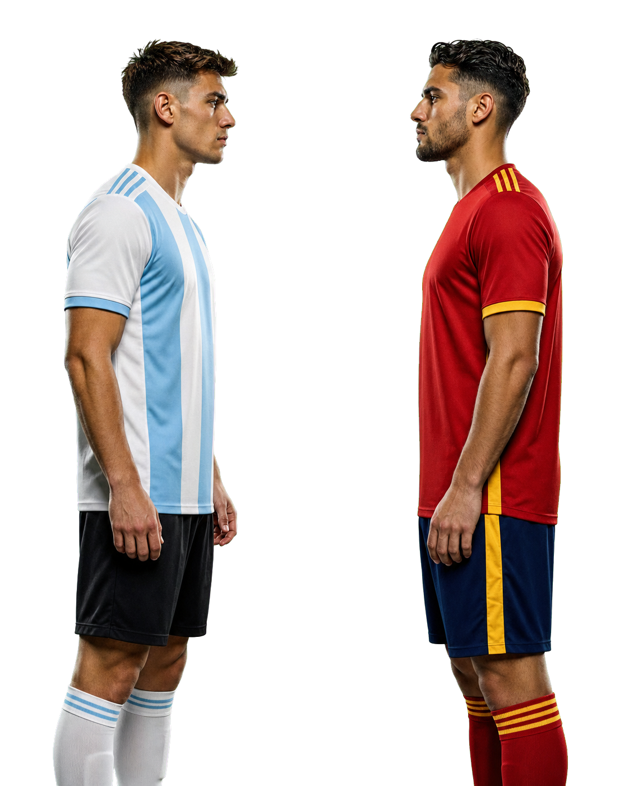
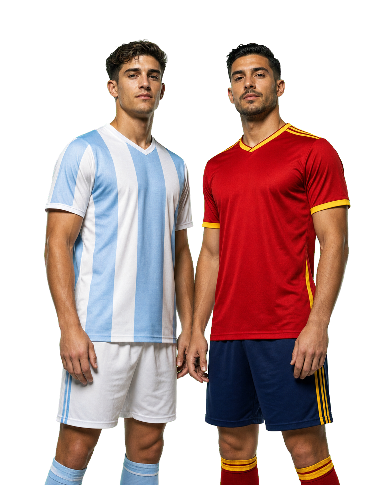
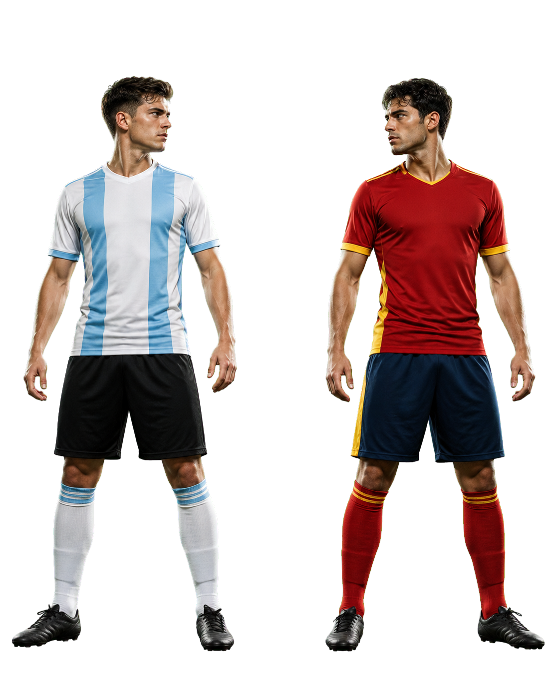

Selección fotográfica
Final del Mundial · Argentina vs España · Voz A aprobada
1

Duelo directo
Mayor tensión y cercanía con la referencia tipográfica.
2

Confianza
Más cálida y editorial; ambos equipos comparten protagonismo.
3

Antes del silbatazo
Más aire, cuerpo completo y máxima flexibilidad de recorte.